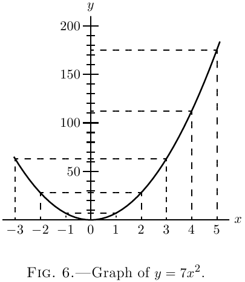
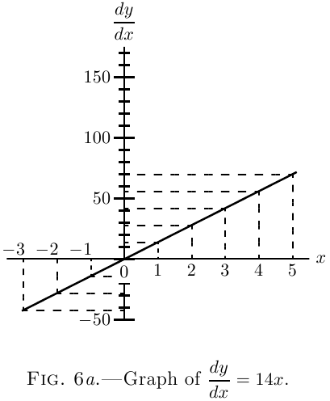

第 5 章下一步，如何处理常数
在我们的方程中，我们认为 \(x\) 是增长的，由于 \(x\) 增长，\(y\) 也随之改变其值并增长。我们通常认为 \(x\) 是一个可以改变的量，并且将 \(x\) 的变化视为一种原因，把引起的 \(y\) 的变化视为一种结果。换句话说，我们认为 \(y\) 的值依赖于 \(x\) 的值。\(x\) 和 \(y\) 都是变量，但 \(x\) 是我们操控的变量，而 \(y\) 是“依赖变量”。在前一章中，我们一直在寻找依赖变量 \(y\) 的变化与我们独立改变的 \(x\) 的变化之间的比例关系规则。
我们的下一步是弄清楚在微分过程中，由常数（即在 \(x\) 或 \(y\) 变化时不会改变的数字）的存在引起的影响。
增加的常数。
让我们从一个包含常数的简单例子开始，如下：
令
和以前一样，假设 \(x\) 增加到 \(x + dx\)，而 \(y\) 增加到 \(y + dy\)。
则：
忽略高阶小量，这变成
减去原来的 \(y = x^3 + 5\)，我们得到：
所以 \(5\) 完全消失了。它对 \(x\) 的增长没有任何贡献，并未进入微分系数。如果我们将 \(5\) 换成 \(7\)、\(700\) 或任何其他数字，它也会消失。因此，如果我们用字母 \(a\)、\(b\) 或 \(c\) 表示任意常数，它们在我们微分时也会消失。
如果附加常数是负值，比如 \(-5\) 或 \(-b\)，它同样会消失。
乘常数
我们用一个简单的例子进行实验：
设 \(y = 7x^2\)。 然后按照之前的方法，我们得到：
然后，减去原来的 \(y = 7x^2\)，并忽略最后一项，我们得到：
让我们通过给 \(x\) 一组连续的值 \(0\)、\(1\)、\(2\)、\(3\) 等，并找到对应的 \(y\) 和 \(\dfrac{dy}{dx}\) 值，来绘制方程 \(y = 7x^2\) 和 \(\dfrac{dy}{dx} = 14x\) 的图像。
这些值如下表所示：
| \(x\) | \(0\) | \(1\) | \(2\) | \(3 \) | \(4\) | \(5\) | \(-1\) | \(-2\) | \(-3\) |
|---|---|---|---|---|---|---|---|---|---|
| \(y\) | \(0\) | \(7\) | \(28\) | \(63\) | \(112\) | \(175\) | \(7\) | \(28\) | \(63\) |
| \(\dfrac{dy}{dx}\) | \(0\) | \(14\) | \(28\) | \(42\) | \(56\) | \(70\) | \(-14\) | $ -28$ | $ -42$ |

现在按合适的比例绘制这些值，我们得到两条曲线图6和图6a。

仔细比较这两个图，可以通过观察验证导出曲线图6a的纵坐标高度与原曲线图6在对应 \(x\) 值处的斜率成比例。在原曲线的起点左侧，其斜率为负（即从左到右向下倾斜），导出曲线的对应纵坐标也为负。
现在如果回顾，我们会看到直接对 \(x^2\) 求导得到 \(2x\)。因此，\(7x^2\) 的微分系数只是 \(x^2\) 的微分系数的 \(7\) 倍。如果取 \(8x^2\)，则其微分系数将是 \(x^2\) 的微分系数的八倍。如果令 \(y = ax^2\)，则我们将得到
如果我们从 \(y = ax^n\) 开始，将得到 \(\dfrac{dy}{dx} = a×nx^{n-1}\)。因此，被乘的常数，在微分时都会重新以乘数出现。同样，对于除法也是如此：例如，如果我们将上例中的常数取为 \(\frac{1}{7}\) 而不是 \(7\)，那么微分结果中将会出现相同的 \(\frac{1}{7}\)。
一些进一步的例子
以下进一步的例子，通过完整的计算过程，可以帮助你完全掌握微分应用于普通代数表达式的过程，并能够自行完成本章末的练习。
(1) 对 \(y = \dfrac{x^5}{7} - \dfrac{3}{5}\) 求导。
\(\dfrac{3}{5}\) 是添加的常数，因此消失。
于是我们可以直接写出
(2) 对 \(y = a\sqrt{x} - \dfrac{1}{2}\sqrt{a}\) 求导。
项 \(\dfrac{1}{2}\sqrt{a}\) 消失,因为它是添加的常数；而 \(a\sqrt{x}\) 用指数形式表示为 \(ax^{\frac{1}{2}}\)，因此我们有
(3) 如果 \(ay + bx = by - ax + (x+y)\sqrt{a^2 - b^2}\)，求 \(y\) 关于 \(x\) 的微分系数。
通常，这种表达式需要比我们目前所掌握的知识更多的技巧；不过，值得一试是否能将表达式简化。
首先，我们要尝试将其化为 \(y = {}\) 仅包含 \(x\) 的表达式。
该表达式可以写为
平方后得到
简化为
因此,
(4) 半径 \(r\) 和高度 \(h\) 的圆柱体体积由公式 \(V = \pi r^2 h\) 给出。求当 \(r = 5.5\) 厘米，\(h = 20\) 厘米时，半径对体积的变化率。如果 \(r = h\)，求半径变化 \(1\) 厘米导致体积变化 \(400\) 立方厘米时，圆柱体的尺寸
\(V\) 关于 \(r\) 的变化率为
当 \(r = 5.5\) 厘米，\(h=20\) 厘米时，该值为 \(690.8\)。这意味着半径变化 \(1\) 厘米将导致体积变化 \(690.8\) 立方厘米。这可以通过计算验证，因为当 \(r = 5\) 和 \(r = 6\) 时的体积分别为 \(1570\) 立方厘米和 \(2260.8\) 立方厘米，而 \(2260.8 - 1570 = 690.8\)。
此外，如果
(5) 辐射高温计的读数 \(\theta\) 与被观测物体的摄氏温度 \(t\) 之间的关系为
其中，\(\theta_1\) 是对应已知温度 \(t_1\) 的读数。
比较温度为 \(800°\)C、\(1000°\)C、\(1200°\)C 时的高温计灵敏度，已知在温度 \(1000°\)C 时读数为 \(25\)。
灵敏度是读数对温度的变化率，即 \(\dfrac{d\theta}{dt}\)。该公式可写为
我们有
当 \(t=800\)、\(1000\) 和 \(1200\) 时，\(\dfrac{d\theta}{dt} = 0.0512\)、\(0.1\) 和 \(0.1728\)。
灵敏度从 \(800°\) 到 \(1000°\) 约增加一倍，到 \(1200°\) 时又增加了四分之三。